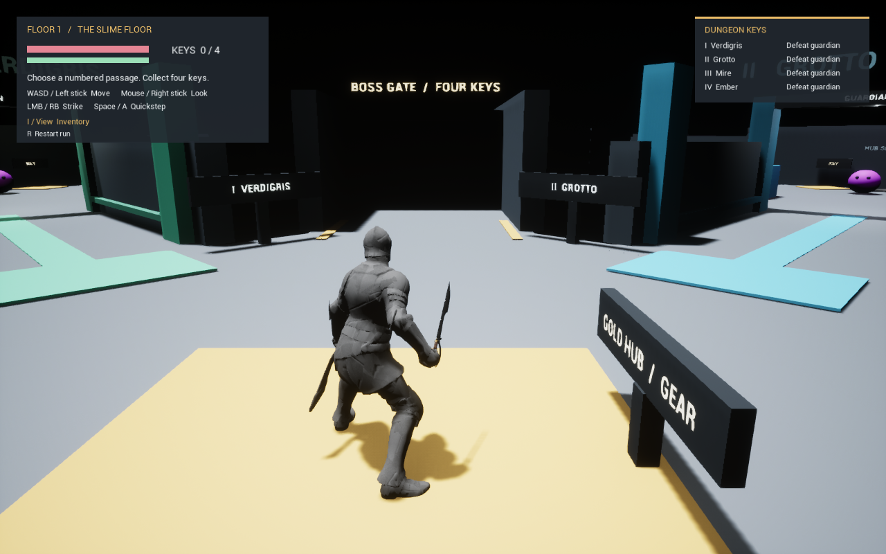
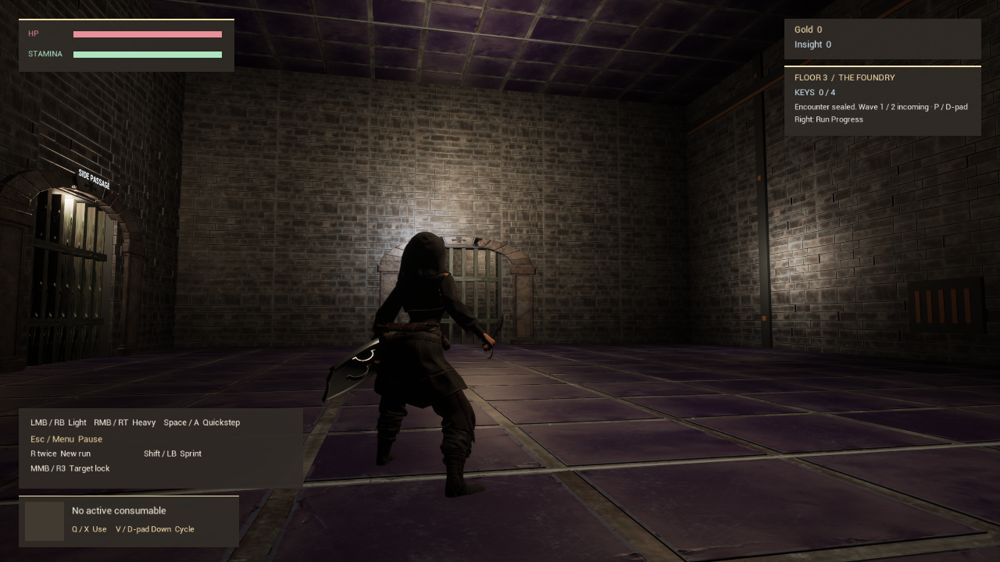
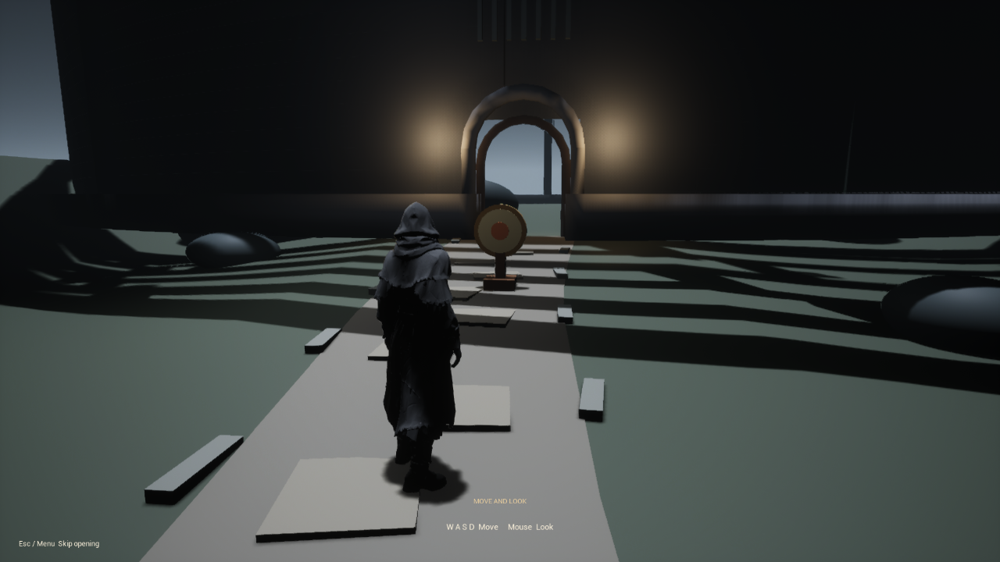

2026 Epic AI MegaJam · Glass Box Development Log
What the Tower Keeps
By Mason Prather · November 12–16, 2026
Jam submission build · Alpha 0.3 Win64
One floor taught us what the tower needed
I built What the Tower Keeps around one repeatable decision for the jam’s Director’s Cut theme. Which route is worth taking next? Four dungeons branch out from the same hub. Each guardian leaves a physical key, and each key opens a shortcut back. Four keys let the player pull the lever that opens the boss gate. The hub is where the player turns the run’s rewards into a build before ascending.
The first playable slice was one floor. It gave me a complete path to test, from the first fight to the boss and back to a saved checkpoint. By Alpha 0.3, the loop ran across the Slime Floor, the Ossuary, and the Foundry. Procedural layouts vary the route interiors while the hub, guardian keys, shortcuts, and boss gate stay recognizable. Keeping those landmarks stable made it easier to learn a floor even as the rooms changed.
Four days of building and playtesting
-
Make the first floor playable
I built the Slime Floor around four guardians, physical key pickups, and a boss gate. When the Mac guest moved on their screen and stood still on Windows, we traced it to how each machine treated the floor collision. A matching two-device retest confirmed normal guest movement, revival at the hub, and Ascend into the Ossuary.
-
Make a dodge and return trip feel better
Fighting skeletons in the Crypt showed me how sluggish a light attack felt coming out of a quickstep. I retested a faster follow-up. For the reverse transition, the heavier Vanguard got a shorter input buffer than the mobility build. I also added a shortcut back to the hub after picking up a guardian’s key. The Mac test checked all eight return pads across the two playable floors.
-
Give the Foundry hazards a readable warning
I missed the steam warnings on my first Foundry clear. We made the grates change color before firing and marked the paths that stay safe. On the retest I saw both safe routes, and the log recorded zero steam hits. Later that day we added seeded side passages, stairs, and ladders so a route could reward exploration as well as progress toward its guardian.
-
Assemble and test Alpha 0.3
Six character variants passed rendered New Game, starter combat, and cleared-hub reload checks on Mac. I froze Alpha 0.2 and used Alpha 0.3 to bring together the voiced opening, outdoor practice area, and three-floor tower. The extracted Mac package passed the opening, a full solo circuit with checkpoint reload, and a local co-op check before the Windows jam build was finished.
Three captures from development

- Numbered signs identify Verdigris and Grotto, two routes out of the central hub.
- The boss gate makes the four-key objective visible alongside the routes.

- The left doorway marks a possible side passage in this layout.
- The lowered gate shows the encounter is sealed.
- The HUD shows that the first of two waves is incoming.

- The practice target teaches the player’s first unarmed strike.
- The lit arch makes the destination visible from the practice area.
Playtesting changed the opening and combat
Attacks felt too fast in early builds, including moments when damage arrived ahead of the motion. We started treating windup, contact, and recovery as three separate things to tune. We slowed the attack and checked that animation and damage landed together. The weapon kits still needed different rhythms, so we checked both the hit and the next available action by kit.
We also added a playable approach to the tower. The player starts unarmed, learns a punch on a practice target, and chooses a weapon at the Armory after entering. That gave the first weapon choice a place in the story and let the player try movement and combat on the way to the door. In Alpha 0.4 I enclosed the approach with visible fog and gave the tower a physical doorway and closing portcullis. I reworked the opening cameras to keep the selected character visible and upright.
The controller pass added deadzones to stop idle stick drift while keeping deliberate aim and target switching. I also moved room names out of the space and into a first-visit title on each player’s HUD. In co-op, a teammate can cross a threshold before you do. Your title appears when you discover the dungeon yourself. A physical crest near each entrance marks its shared key state. The route stays open after a clear.
A second player exposed a different bug
In the first Windows and Mac session, the guest moved on their own screen while the host saw them stand still. The client log showed that the guest could not resolve the floor component referenced in the host’s movement corrections. The floor collision should have been static. Once we changed it, a two-process Mac regression drove the guest with normal keyboard input, forced a server correction, and checked that both ends agreed on the guest’s movement. The same regression checked revival and Ascend. Those results describe a local two-process check.
How I worked with AI
I set the game’s direction and scope, played the builds, and decided what to change after seeing the results. Codex helped with C++ implementation, debugging, automation, and build checks. I split work across gameplay, world, UI, progression, presentation, networking, and release QA. Each team returned its changes and evidence for integration. Unreal Engine 5.8.4 was the game runtime and Unreal’s automation framework provided repeatable checks alongside hands-on play.
Before the jam I prepared the concept notes, toolchain, build and test wrappers, and disposable import and packaging probes. The probes let me identify setup failures before the contest window. The playable tower was built during the jam.
An AI handoff you can see in the game
I asked the Art agents to fit six Meshy character bodies to the same Unreal skeleton. An early weight check registered movement in the combined mesh. In an isolated bend, the borrowed glove followed the bone while the sleeve stayed put. Art checked the weights by body region, corrected the affected areas, and handed the reviewed meshes to the shared catalog used by both New Game and the playable character.
I held the preview until all six bodies passed rendered New Game, starter combat, and cleared-hub reload on Mac. Then I cleared the Slime Floor as Knight Broad and climbed into the Ossuary. The combat pass let me check the skirt and armor in motion. After seeing all six choices on the title screen, I asked for an avatar preview about 2.5 times larger so players could see the differences.
Build checks
The Alpha 0.3 Mac package completed the opening and a three-floor solo circuit, and a rendered guest joined in local loopback. The submitted Windows 11 build passed a fresh extraction, launch, New Game, and movement in the outdoor tutorial.
The Alpha 0.4 Mac opening candidate passed the voiced intro, practice-target and door sequence, and reload into the hub. The input fixture verified that neutral sticks stayed still and a deliberate flick switched lock-on targets. The later dungeon presentation package passed the Mac cook audit and clean extraction. I ran a rendered host and guest on one Mac, both at 1280 × 720. The host entered Verdigris first and only its HUD showed the name. The guest got its own title on entering later. Both clients stayed quiet on revisits, then each showed Grotto on its first entry. One startup attempt and one synchronization attempt failed before the successful run.
November 16 · After submission
Alpha 0.3 Win64 was the build I submitted to the MegaJam. The later Alpha 0.4 Windows build hit a compiler error where a local name matched an inherited Unreal member. After renaming the local, it compiled with the normal MSVC warning settings.
From a fresh Alpha 0.4 ZIP extraction on Windows 11 with default D3D12 and the editor closed, the build reached the title screen, accepted a New Game selection, registered the tutorial strike, and reached the Slime Floor hub. That Win64 smoke test passed after the Alpha 0.3 submission. The rendered two-player dungeon-title check described above ran on Mac.